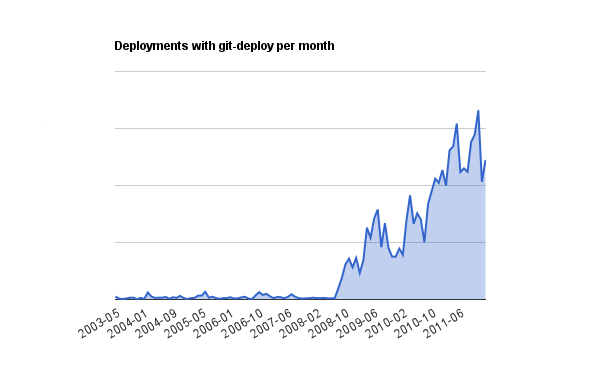
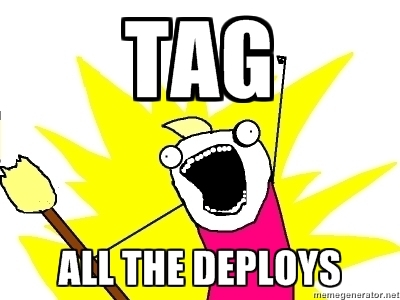
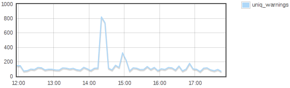

Rapid real-world testing using git-deploy
Ævar Arnfjörð Bjarmason <avarab@gmail.com>
February 5, 2012
Ævar Arnfjörð Bjarmason <avarab@gmail.com>
February 5, 2012
We've gone from deployments being a hard manual process, to doing dozens of them a day.


git
pull/commit/cherry-pick/reset).
.git/deploy/lock file in your
deployment repository.
git pull for you.
# checks that we're on "master" cron/pre-start.001_nobranch_rollout.pl
git pull and the start hooks.
I'm sorry Dave, I'm afraid I can't do that
$ git-deploy start # INFO : Starting step 'start' at 2012-02-02 16-22-01 # FATAL: You may not start a new rollout as it looks like one is already in progress! # FATAL: Failed to create lock dir '.git/deploy' because 'File exists' # FATAL: Log: # FATAL: start: 2012-02-02 16:19:28 trunk 110bc23d8204dae87b2af259a02d47cd08711589 717 slanning
$ git-deploy start
# INFO : Starting step 'start' at 2012-02-02 16-30-12
# INFO : Working directory was checked out to tag 'app-20120202-160118', will restore this tag on abort
# INFO : Step 'start' concluded at 2012-02-02 16:30:12 took 29 seconds to complete
# YAY : 'start' for 'app' completed successfully
$ git-deploy status
# NOTE : app rollout started - not synced yet (app-20120202-160118)
# NOTE : start: 2012-02-02 16:30:12 trunk 639022c78daf1b85b76d4816803a6d37bef67e10 3374 aearnfjord
git push
Debian or RPM package out
of it.

fosdem branch of that repository